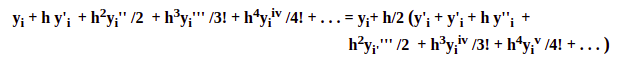
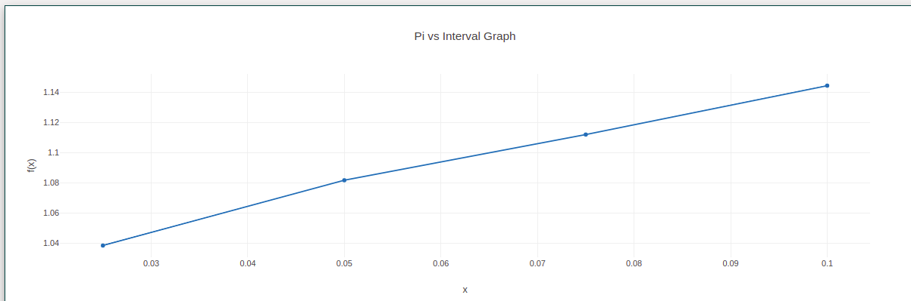

To Solve Ordinary Differential Equation using Modified Euler's method
The Euler forward scheme may be very easy to implement but it can't give accurate solutions. A very small step size is required for any meaningful result. In this scheme, since, the starting point of each sub-interval is used to find the slope of the solution curve, the solution would be correct only if the function is linear. So an improvement over this is to take the arithmetic average of the slopes at xi and xi+1(that is, at the end points of each sub-interval). The scheme so obtained is called modified Euler's method. It works first by approximating a value to yi+1 and then improving it by making use of average slope.
yi+1 = yi+ h/2 (y'i + y'i+1)
= yi + h/2(f(xi, yi) + f(xi+1, yi+1))
If Euler's method is used to find the first approximation of yi+1 then
yi+1 = yi + 0.5h(fi + f(xi+1, yi + hfi))
yi+1 = yi + h y'i + h2yi'' /2 + h3yi''' /3! + h4yiiv /4! + ...
fi+1 = y'i+1 = y'i + h y''i + h2yi'''' /2 + h3yiiv /3! + h4yiv /4! + ...
By substituting these expansions in the Modified Euler formula gives

# Modified Euler method in Python
import numpy as np
import matplotlib.pyplot as plt
plt.style.use('seaborn-poster')
# Define parameters
f = lambda t, s: np.exp(-t) # ODE
h = 0.1 # Step size
t = np.arange(0, 1 + h, h) # Numerical grid
s0 = -1 # Initial Condition
s = np.zeros(len(t))
sp= np.zeros(len(t))
s[0] = s0
sp[0] = s0
for i in range(0, len(t) - 1):
s[i + 1] = s[i] + h*f(t[i], s[i])
sp[i+1]= s[i] + h*0.5*(f(t[i],s[i]) + f(t[i+1], s[i+1]))
print(sp)
plt.figure(figsize = (12, 8))
plt.plot(t, s, 'bo--', label='Approximate')
plt.plot(t, -np.exp(-t), 'g', label='Exact')
plt.title('Approximate and Exact Solution \
for Simple ODE')
plt.xlabel('t')
plt.ylabel('f(t)')
plt.grid()
plt.legend(loc='lower right')
plt.show()
Click here to perform simulation
Take Observations from the method and tabulate it for the given intervals.
Plot a graph also. (Value vs Function).

Hence we have calculated the value of Ordinary Differential Equation using Modified Euler's method.